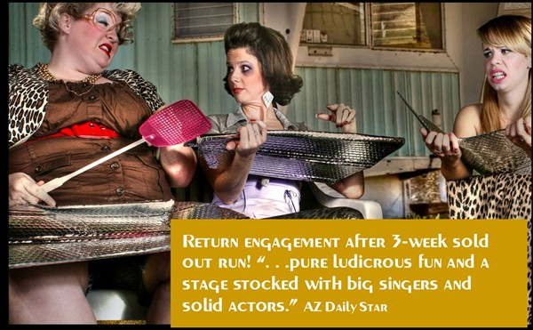

Kevin Johnson, Artistic Director PRESENTS

NEW SPRING DATE APRIL 24-TWO SHOWS
AT THE ASDB BERGER PERFORMING ARTS CENTER
Music and Lyrics by David Nehls
Book by Betsy Kelso
Director, Choreographer: Debbie Runge
Associate Director: Kevin Johnson
Music Director: Jon Marbry
Lighting Design: Steve Giannoble
Set Design: Sheldon Metz
Production Stage Manager: Fred Rodriguez
Costume Design: Shana Nunez
Wigs by Eric Marshall Taylor
CAST
Jay C. Cotner ♦ Amy Erbe ♦ Nicholas Gallardo ♦ Ellie Jepperson ♦
Charity LaPonsie ♦ Chezale Rodriguez ♦ Jacinda Rose Swinehart ♦
“A show about agoraphobia, adultery, 80s nostalgia,
spray cheese, road kill, hysterical pregnancy, a broken electric
chair, kleptomania, strippers, flan and disco.
It’s everything a musical should be.”From the pen of Kathy Allen of the Arizona Daily Star the following review:
Arizona Daily StarPerformances:
Spring Remount!
April 24, 3:00pm and 8:00pm
Preview January 7, 2010, 7:30pm
January 8, 7:30pm
January 9, 7:30pm
January 10, 3pm
January 15, 7:30pm
January 16, 7:30pm
January 17, 3pm
January 21, 7:30pm - ADDED SHOW
January 22, 7:30pm
January 23, 3:00pm - ADDED SHOW
January 23, 7:30pm
January 24, 3pm
Tickets $25.00 student/senior (55 or older)
General $27.50
Groups of 10 or more, $22.50 each
Buy tickets for The Great American Trailer Park Musical.